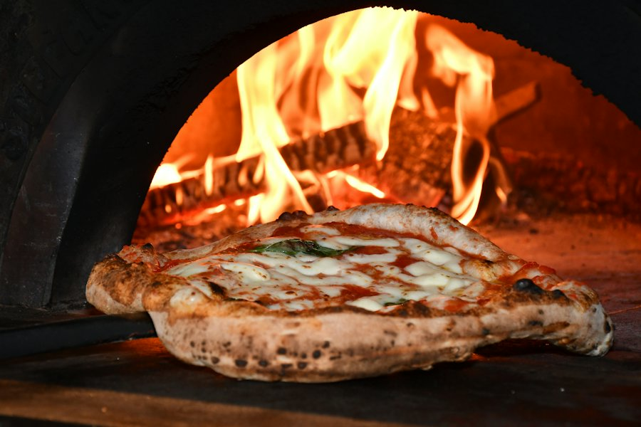

Les pizzas
Pâte fine, garnitures généreuses et produits frais. Des classiques de pizzeria et quelques recettes de la maison, à emporter.
Des recettes préparées avec des produits frais, à commander par téléphone et à récupérer bien chaudes.
Une carte courte, préparée sur place. Les recettes du moment et les nouveautés sont annoncées sur la page Facebook du Soledo.
La carte détaillée et les prix sont donnés au téléphone ou au comptoir.

Un appel pour passer commande, une heure de retrait, et votre pizza vous attend au 10 rue de Quimper, dans le bourg de Pouldreuzic.
Les jours d'ouverture et les éventuelles fermetures pour congés sont annoncés sur Facebook.